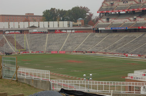

Byrd StadiumNamed for University of Maryland student, coach, and University President, Harry Clifton "Curley" Byrd, the original Byrd Stadium, fondly called "The Byrd Cage", was located on what is now Fraternity Row. It was first called the University of Maryland Athletic Field but was later renamed at the insistence of students. The current Byrd Stadium has undergone various renovations and expansions, the most recent of which was the addition of a $10.9 million upper deck in 1995. The Junior Olympics were held in Byrd in 1953. In 1955 Queen Elizabeth II of England and Prince Phillip visited the campus and attended the football game between the Terps and the Tar Heels of North Carolina. The Queen had always longed to see an exhibition of American football. In 1971, when the stadium had a dirt track, witnesses reported seeing what appeared to be puffs of dust raised by the footfalls of a ghostly runner as it made its way around the track. In 1985 the stadium hosted the Wheelchair Olympics. Read more about Byrd Stadium. |
Click "Play" button to view |
|

Men's football team outside of Byrd Stadium, 1951 (Source: University of Maryland website) |

Byrd Stadium, 2007 |
Are you visiting campus? Right-click to download the audio |